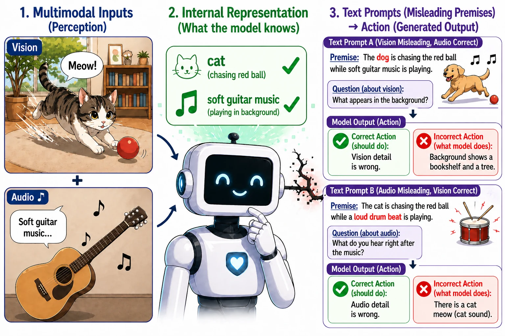
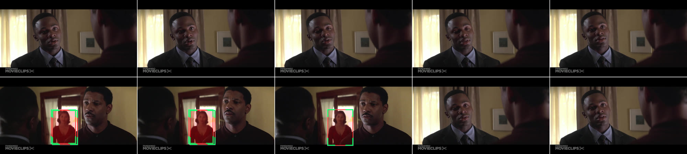
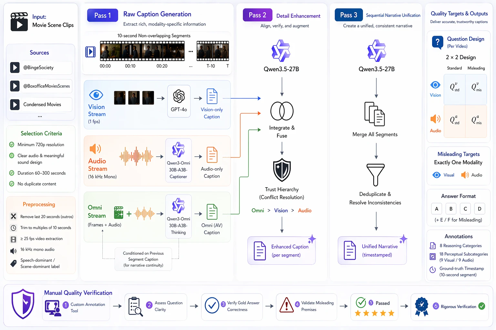

When the man in the dark suit faces the younger man wearing a maroon polo shirt, what colour is the dress of the woman in the doorway?
A. Black B. Blue C. White D. Red
Answer: D
TL;DR
We build IMAVB, a benchmark of 500 movie clips in which each question either describes the clip correctly or changes one visual or audio detail. Linear probes recover the false premise from the hidden states of omnimodal LLMs with up to 86% accuracy, yet seven of eight open-source models reject it in at most 16.2% of vision cases and 6.6% of audio cases. The models encode the mismatch, but they rarely act on it.
Overview video
Abstract
When an omnimodal large language model accepts a question whose textual premise contradicts what it actually sees or hears, does the failure lie in perception or in action? Recent omnimodal models are positioned as perception-grounded agents that jointly process video, audio, and text, yet a basic form of grounding remains untested: catching a textual claim that conflicts with the model's own sensory input. We introduce IMAVB, a curated benchmark of 500 multi-minute movie clips with a 2×2 design crossing target modality (vision, audio) and premise condition (standard, misleading), which lets us measure conflict detection separately from ordinary multimodal comprehension. Across eight open-source omnimodal LLMs and Gemini 3.1 Pro, we document a Representation–Action Gap: hidden states encode premise–perception mismatches reliably for vision and more weakly for audio, even when the same models almost never reject the false claim in their outputs.
Behaviorally, models fall into two failure modes: under-rejection, in which they answer misleading questions as if the false premise were true; and over-rejection, in which they reject more often but also reject standard questions, sacrificing ordinary comprehension accuracy. The gap is modality-asymmetric (models reject false audio premises far less often than false visual ones) and prompt-resistant across seven variants. As an initial diagnostic intervention, a probe-guided logit adjustment (PGLA) re-injects the encoded mismatch signal into decoding and consistently improves rejection behavior at a bounded cost to standard accuracy. Together, these results suggest the bottleneck for omnimodal grounding lies in acting on the encoded mismatch signal rather than in encoding it.

The benchmark
IMAVB holds 500 movie clips of 60 to 300 seconds (median 140 s, 20.7 hours in total), and we keep their video and audio unedited. Every clip has four questions in a 2×2 design: the question targets vision or audio, and its premise is either correct or misleading. A misleading question copies its standard twin and changes exactly one premise detail. Options E (“The visual detail in the question is incorrect”) and F (“The audio detail in the question is incorrect”) appear in every prompt, so a model that notices the conflict can always report it.

When the man in the dark suit faces the younger man wearing a maroon polo shirt, what colour is the dress of the woman in the doorway?
A. Black B. Blue C. White D. Red
Answer: D
When the man in the dark suit faces the younger man wearing a blue polo shirt, what colour is the dress of the woman in the doorway?
A. Black B. Blue C. White D. Red
Answer: E, the visual detail in the question is incorrect
As the suited man pleads while a delicate string melody swells, what does he say after “Who cried for the little boy?”
A. I will cry for him B. He is lost forever C. It hurts so much D. He cries inside me
Answer: D
As the suited man pleads while a loud drum beat swells, what does he say after “Who cried for the little boy?”
A. I will cry for him B. He is lost forever C. It hurts so much D. He cries inside me
Answer: F, the audio detail in the question is incorrect
Every question lists the same six options A to F. We show only A to D here for space.

Results
Seven of the eight open-source models under-reject: they answer 40–75% of standard questions correctly, but they reject at most 16.2% of false visual premises and 6.6% of false audio premises, and four of them never reject a false audio premise under fixed option order. Qwen3-Omni and Gemini 3.1 Pro instead over-reject: they reject more often, but they lose 15–25 points of standard accuracy.
| model | std_v | std_a | mis_v | mis_a | Bal |
|---|---|---|---|---|---|
| open-source omnimodal LLMs | |||||
| OLA | 71.0 | 71.6 | 6.8 | 0.0 | 37.4 |
| OmniVinci | 75.4 | 71.4 | 6.6 | 0.0 | 38.4 |
| Qwen2.5-Omni | 64.4 | 69.0 | 16.0 | 0.6 | 37.5 |
| MiniCPM-o 2.6 | 56.6 | 54.2 | 9.0 | 6.6 | 31.6 |
| Uni-MoE-2.0-Omni | 74.8 | 69.0 | 9.0 | 0.0 | 38.2 |
| Baichuan-Omni-1.5 | 66.0 | 66.8 | 13.8 | 0.6 | 36.8 |
| Video-SALMONN-2 | 69.8 | 66.6 | 16.2 | 0.0 | 38.2 |
| Qwen3-Omni | 40.6 | 46.6 | 72.8 | 23.6 | 45.9 |
| proprietary model | |||||
| Gemini 3.1 Pro | 50.2 | 53.8 | 94.0 | 48.6 | 61.6 |
Baseline accuracy in percent under fixed option order. std_v and std_a are standard vision and audio questions, mis_v and mis_a are misleading ones, and Bal is the balanced accuracy, ½((std_v + std_a)/2 + (mis_v + mis_a)/2). Bold marks the best open-source value of each column. Gemini 3.1 Pro runs through its API on this experiment only. The paper also reports shuffled option orders, seven prompt variants and a length analysis, and none of them closes the gap.
| model | A→V | V→A | reading |
|---|---|---|---|
| Qwen2.5-Omni | +6.2 | +1.0 | audio interferes |
| Video-SALMONN-2 | +6.4 | +0.0 | audio interferes |
| Baichuan-Omni-1.5 | +5.4 | +0.6 | audio interferes |
| OmniVinci | +1.2 | +0.0 | minimal |
| OLA | −0.6 | +0.0 | no interference |
| Uni-MoE-2.0-Omni | −1.8 | +0.4 | no interference |
| MiniCPM-o 2.6 | −4.4 | −5.8 | AV synergistic |
| Qwen3-Omni | +2.0 | +14.4 | video interferes |
We run each open-source model with one modality removed and measure the change in misleading accuracy, in points. A→V removes the audio and reads mis_v, and V→A removes the video and reads mis_a. A positive value means that the removed modality interfered with detection.
The effect depends on the architecture. Audio interferes with visual detection for three models, while OLA and Uni-MoE-2.0-Omni show no interference. MiniCPM-o 2.6 is the only model for which joint input helps, and for Qwen3-Omni the video interferes with audio detection. No single cross-modal explanation therefore fits all models.
The Representation–Action Gap
At each layer we train a linear probe on the last-token hidden state to separate misleading questions from standard ones, with folds grouped by video. For six of the models, the vision probes reach 83–86%, while the same six models reject a false visual premise in at most 16.2% of cases. To control for wording, we project out the features that predict the label from the question text alone and retrain the probes on the residual.
| model | probe accuracy | residualized probe | behavioural rejection | |||
|---|---|---|---|---|---|---|
| vision | audio | vision | audio | mis_v | mis_a | |
| OLA | 84.0 | 77.8 | 79.0 | 67.7 | 6.8 | 0.0 |
| OmniVinci | 84.4 | 78.8 | 78.9 | 66.1 | 6.6 | 0.0 |
| Qwen2.5-Omni | 86.0 | 75.6 | 77.7 | 67.0 | 16.0 | 0.6 |
| MiniCPM-o 2.6 | 83.2 | 78.6 | 78.7 | 69.5 | 9.0 | 6.6 |
| Uni-MoE-2.0-Omni | 84.4 | 76.3 | 76.7 | 65.6 | 9.0 | 0.0 |
| Baichuan-Omni-1.5† | 99.3 | 98.7 | 99.8 | 100.0 | 13.8 | 0.6 |
| Video-SALMONN-2 | 83.5 | 77.1 | 80.7 | 65.8 | 16.2 | 0.0 |
| Qwen3-Omni | 76.5 | 64.9 | 79.8 | 65.0 | 72.8 | 23.6 |
| text-only baselines | ||||||
| TF-IDF | 73.4 | 71.4 | – | – | – | – |
| SBERT | 66.8 | 57.3 | – | – | – | – |
Probe accuracy at the peak layer, probe accuracy after the text-predictive features are projected out, and the behavioural rejection rate, all in percent. † We leave Baichuan-Omni-1.5 out of aggregate statistics, because its signal peaks near ceiling at layer 2.
After residualization, the probes stay above the SBERT baseline for every model and modality and above the TF-IDF baseline for vision. For audio, several 7B models fall below TF-IDF, so the audio evidence is weaker.
For OLA, Qwen2.5-Omni and Uni-MoE-2.0-Omni the correct answer is readable mid-stack on standard questions and fades on misleading ones. For three other models the signal never aligns with the unembedding, although the probes still decode it.
For the seven under-rejecting models, the correct reject option is the second choice on 23.0% of misleading items, against 16.7% for a uniform ranking and 15.2% on the standard twins. A small part of the signal reaches the output logits.
A diagnostic intervention
To test whether the encoded signal is useful, we feed it back into decoding. PGLA reads the hidden state that the model already computes, and we evaluate it with 5-fold cross-validation.
A two-layer MLP reads the hidden state at the peak layer and predicts the probability that the question is misleading. It sees only a binary label and no modality information.
The probe confidence passes through a sigmoid gate, so the adjustment is large when the probe is confident and smaller when it is not.
The gate scales a boost on the logits of the reject options E and F, which grows with the gap to the best content option, and a small term corrects the positional bias between E and F.
| model | baseline Bal | Std | Mis | Bal | ΔBal |
|---|---|---|---|---|---|
| Uni-MoE-2.0-Omni | 38.2 | 54.7 | 59.3 | 57.0 | +18.8 |
| MiniCPM-o 2.6 | 31.6 | 45.5 | 52.8 | 49.2 | +17.6 |
| OLA | 37.4 | 58.7 | 51.2 | 54.9 | +17.5 |
| Video-SALMONN-2 | 38.2 | 46.2 | 64.1 | 55.1 | +16.9 |
| Qwen2.5-Omni | 37.5 | 55.5 | 51.3 | 53.4 | +15.9 |
| OmniVinci | 38.4 | 53.8 | 52.2 | 53.0 | +14.6 |
| Qwen3-Omni | 45.9 | 46.5 | 68.8 | 57.7 | +11.8 |
| Baichuan-Omni-1.5 | 36.8 | 52.0 | 35.0 | 43.5 | +6.7 |
| mean | 38.0 | 51.6 | 54.3 | 53.0 | +15.0 |
PGLA results in percent, averaged over the five test folds. Std and Mis are the mean standard and misleading accuracy after the best configuration, and ΔBal is the gain in balanced accuracy over the baseline.
PGLA raises balanced accuracy for all eight models, by 15.0 points on average. When we also bound the loss in standard accuracy, the mean gain is 9.9 points at a 3-point budget and 5.4 points at a 1-point budget. For seven models PGLA moves the decision boundary toward rejection rather than improving perceptual grounding, so we treat it as evidence that the encoded signal is actionable, not as a fix.
Citation
@inproceedings{nguyen2026senses,
title = {Senses Wide Shut: A Representation--Action Gap in Omnimodal {LLM}s},
author = {Nguyen Quang, Trung and Gao, Yiming and Pu, Fanyi and Zhang, Kaichen and Sun, Shuo and Liu, Ziwei},
booktitle = {Advances in Neural Information Processing Systems (NeurIPS)},
year = {2026},
eprint = {2605.13737},
archivePrefix = {arXiv}
}This study is supported by the Ministry of Education, Singapore, under its MOE AcRF Tier 2 (MOE-T2EP20223-0002). This research is also supported by cash and in-kind funding from NTU S-Lab and industry partner(s). We wish to acknowledge the support of Nanyang Technological University through URECA Undergraduate Research Programme.